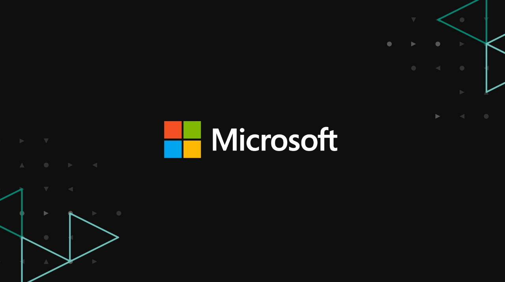

Microsoft
An operating system is the most important software that runs on a computer.
It manages the computer's memory and processes, as well as all of its software and
hardware. It also allows you to communicate with the computer without knowing how to
speak the computer's language. Without an operating system, a computer is useless.

Microsoft Windows, commonly referred to as Windows, is a group of several proprietary graphical operating system families, all of which are developed and marketed by Microsoft. Each family caters to a certain sector of the computing industry. Active Microsoft Windows families include Windows NT and Windows IoT; these may encompass subfamilies, e.g. Windows Server or Windows Embedded Compact (Windows CE). Defunct Microsoft Windows families include Windows 9x, Windows Mobile and Windows Phone.
Microsoft introduced an operating environment named Windows on November 20, 1985, as a graphical operating system shell for MS-DOS in response to the growing interest in graphical user interfaces (GUIs).[3] Microsoft Windows came to dominate the world's personal computer (PC) market with over 90% market share, overtaking Mac OS, which had been introduced in 1984. Apple came to see Windows as an unfair encroachment on their innovation in GUI development as implemented on products such as the Lisa and Macintosh (eventually settled in court in Microsoft's favor in 1993). On PCs, Windows is still the most popular operating system. However, in 2014, Microsoft admitted losing the majority of the overall operating system market to Android,[4] because of the massive growth in sales of Android smartphones. In 2014, the number of Windows devices sold was less than 25% that of Android devices sold. This comparison, however, may not be fully relevant, as the two operating systems traditionally target different platforms. Still, numbers for server use of Windows (that are comparable to competitors) show one third market share, similar to that for end user use.
As of February 2020, the most recent version of Windows for PCs, tablets and embedded devices is Windows 10. The most recent version for server computers is Windows Server, version 1909.[5] A specialized version of Windows also runs on the Xbox One video game console.[6]
Windows XP
Main article:
The next major version of Windows NT, Windows XP, was released on October 25, 2001. The introduction of Windows XP aimed to unify the consumer-oriented Windows 9x series with the architecture introduced by Windows NT, a change which Microsoft promised would provide better performance over its DOS-based predecessors. Windows XP would also introduce a redesigned user interface (including an updated Start menu and a "task-oriented" Windows Explorer), streamlined multimedia and networking features, Internet Explorer 6, integration with Microsoft's .NET Passport services, modes to help provide compatibility with software designed for previous versions of Windows, and Remote Assistance functionality.[28]
At retail, Windows XP was now marketed in two main editions: the "Home" edition was targeted towards consumers, while the "Professional" edition was targeted towards business environments and power users, and included additional security and networking features. Home and Professional were later accompanied by the "Media Center" edition (designed for home theater PCs, with an emphasis on support for DVD playback, TV tuner cards, DVR functionality, and remote controls), and the "Tablet PC" edition (designed for mobile devices meeting its specifications for a tablet computer, with support for stylus pen input and additional pen-enabled applications).[29][30][31] Mainstream support for Windows XP ended on April 14, 2009. Extended support ended on April 8, 2014.[32]
After Windows 2000, Microsoft also changed its release schedules for server operating systems; the server counterpart of Windows XP, Windows Server 2003, was released in April 2003.[27] It was followed in December 2005, by Windows Server 2003 R2.
Windows 9x
Main article:
The next major consumer-oriented release of Windows, Windows 95, was released on August 24, 1995. While still remaining MS-DOS-based, Windows 95 introduced support for native 32-bit applications, plug and play hardware, preemptive multitasking, long file names of up to 255 characters, and provided increased stability over its predecessors. Windows 95 also introduced a redesigned, object oriented user interface, replacing the previous Program Manager with the Start menu, taskbar, and Windows Explorer shell. Windows 95 was a major commercial success for Microsoft; Ina Fried of CNET remarked that "by the time Windows 95 was finally ushered off the market in 2001, it had become a fixture on computer desktops around the world."[20] Microsoft published four OEM Service Releases (OSR) of Windows 95, each of which was roughly equivalent to a service pack. The first OSR of Windows 95 was also the first version of Windows to be bundled with Microsoft's web browser, Internet Explorer.[21] Mainstream support for Windows 95 ended on December 31, 2000, and extended support for Windows 95 ended on December 31, 2001.[22]
Windows 95 was followed up with the release of Windows 98 on June 25, 1998, which introduced the Windows Driver Model, support for USB composite devices, support for ACPI, hibernation, and support for multi-monitor configurations. Windows 98 also included integration with Internet Explorer 4 through Active Desktop and other aspects of the Windows Desktop Update (a series of enhancements to the Explorer shell which were also made available for Windows 95). In May 1999, Microsoft released Windows 98 Second Edition, an updated version of Windows 98. Windows 98 SE added Internet Explorer 5.0 and Windows Media Player 6.2 amongst other upgrades. Mainstream support for Windows 98 ended on June 30, 2002, and extended support for Windows 98 ended on July 11, 2006.[23]
On September 14, 2000, Microsoft released Windows Me (Millennium Edition), the last DOS-based version of Windows. Windows Me incorporated visual interface enhancements from its Windows NT-based counterpart Windows 2000, had faster boot times than previous versions (which however, required the removal of the ability to access a real mode DOS environment, removing compatibility with some older programs),[24] expanded multimedia functionality (including Windows Media Player 7, Windows Movie Maker, and the Windows Image Acquisition framework for retrieving images from scanners and digital cameras), additional system utilities such as System File Protection and System Restore, and updated home networking tools.[25] However, Windows Me was faced with criticism for its speed and instability, along with hardware compatibility issues and its removal of real mode DOS support. PC World considered Windows Me to be one of the worst operating systems Microsoft had ever released, and the 4th worst tech product of all time.
Links
- Types
- Main page
- Linux
- MacOs